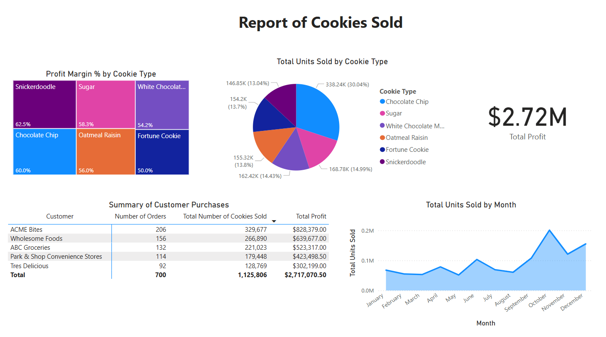

Introduction
This is a place for me to showcase the interactive and dynamic dashboards I built using Power BI Desktop. The goal of creating dashboards is to turn raw data into meaningful insights through intuitive visualizations, empowering users to quickly understand and act on key information.
Key Features
- Custom-built dashboards with real-time data interactivity
- Use of DAX (Data Analysis Expressions) for custom calculations
- Interactive charts, graphs, and KPIs (Key Performance Indicators)
- Drill-through pages for detailed analysis
- Data filters and slicers for customized views
Technologies Used
Power BI Desktop, DAX (Data Analysis Expressions)
Gallery
Cookies Sold
